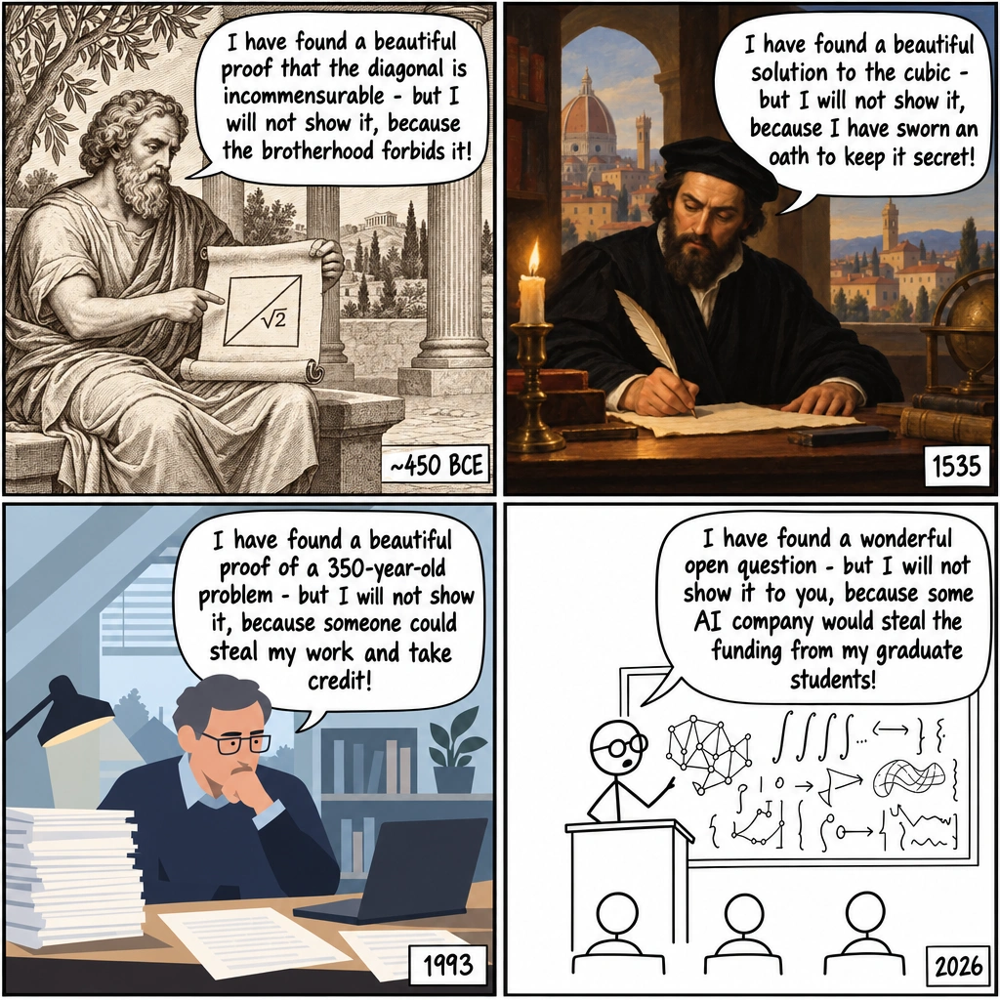
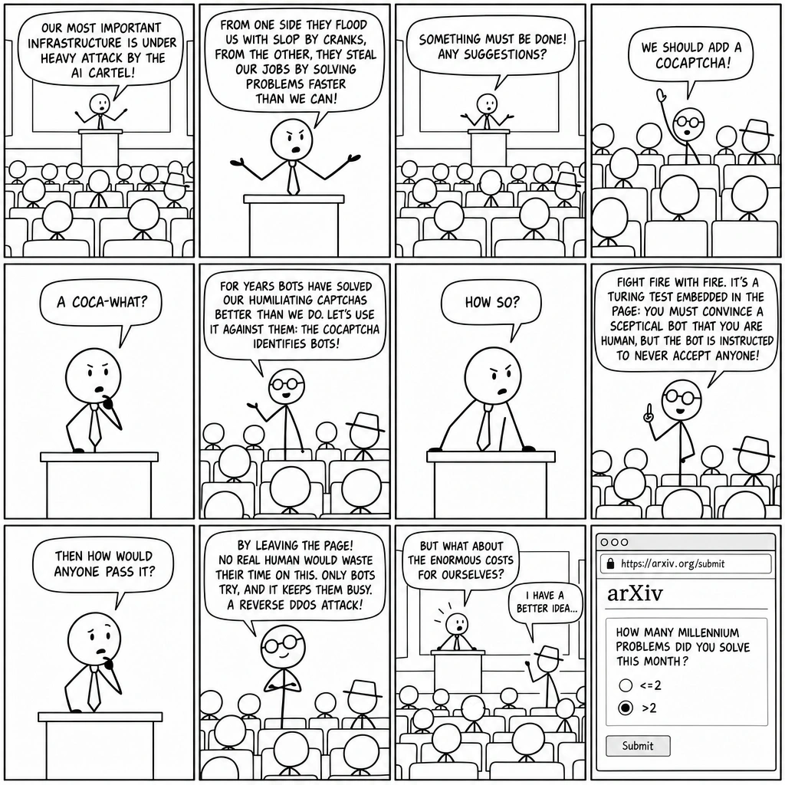

Two Webcomics About Math and Proofs in Times of AI
Secrets in Math

Explanation
Across the long history of mathematics, there have always been communities and practices with some motivation to keep their proofs secret.
- The Pythagoreans discovered the irrationality of the square root of 2 and wanted to keep it a secret, because it did not fit their worldview.
- In the Renaissance, mathematicians held proofs secret for bragging rights and employment opportunities.
- In the modern era people are supposed to publish their proofs, but almost nobody shares partial results to not give competitors any advantages.
With AI, apparently even interesting questions might become a treasured secret of the trade, because otherwise AI bots harvest all the low-hanging fruit from papers, starving young researchers who try to enter this competitive and challenging field.
The mood in math and theory departments is currently best described as an existential crisis, making me rather happy that I have completed my PhD years before all of these developments.
It looks like the future of human mathematics, whether we like it or not, will be less about figuring out proofs in painstaking detail, and more about being able to either come up with interesting questions, or make sense of the formally correct but obscurely written proofs that LLMs tend to produce.
CoCAPTCHA

Explanation
This comic is inspired by the recent addition of a submission limit to arXiv due to an exploding number of AI-based submissions, and by the recent controversial “contributions” to mathematics that were forced upon the math community by a well-known AI company for selfish marketing purposes.
Meta: I wonder, if I had wasted some time to retrace this comic by hand, “paint by numbers”-style, would this then treated like “real” art? As drawing pixel-perfect replica of photographs by hand on canvas seems to count as respectable art, I think this should too.